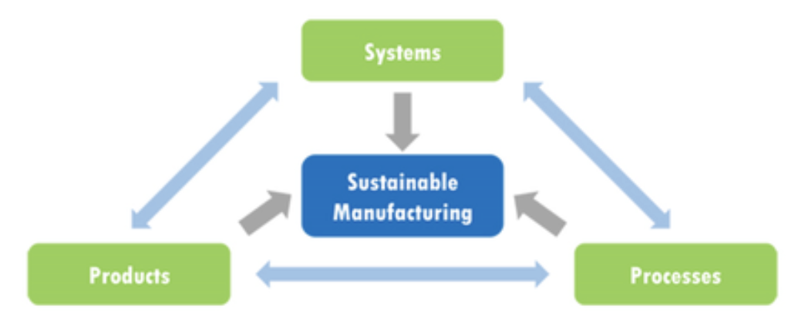

Green & sustainable manufacturing continues to make traction
Green Manufacturing is a focus and business practice within the wider Environmental, Social and Governance movement, to make products and processes sustainable across the entire life cycle and value chain. It incorporates clean manufacturing processes, to minimize GHG emissions, water and power usage, packing requirements, and particularly on end-of-life product waste.
Additionally, companies are starting to see the strategic value in green and sustainable manufacturing, including lower resource requirements, lower production costs, improved recognition and branding, lower regulatory compliance costs, and even additional funding/finance streams.
And it’s not only about the process. Many manufacturing companies are looking at the full lifecycle of their products; how is each product maintained? And what happens to the product at the end of its life? Is it repurposed, recycled, or does it end up in the trash?
Credit: NIST.gov
The emerging technologies enabling green manufacturing include highly integrated systems and digital twinning, industrial-scale adoption of advanced renewable energy sources, and widespread, balanced adoption of distributed manufacturing as opposed to mass production and long logistics chains.